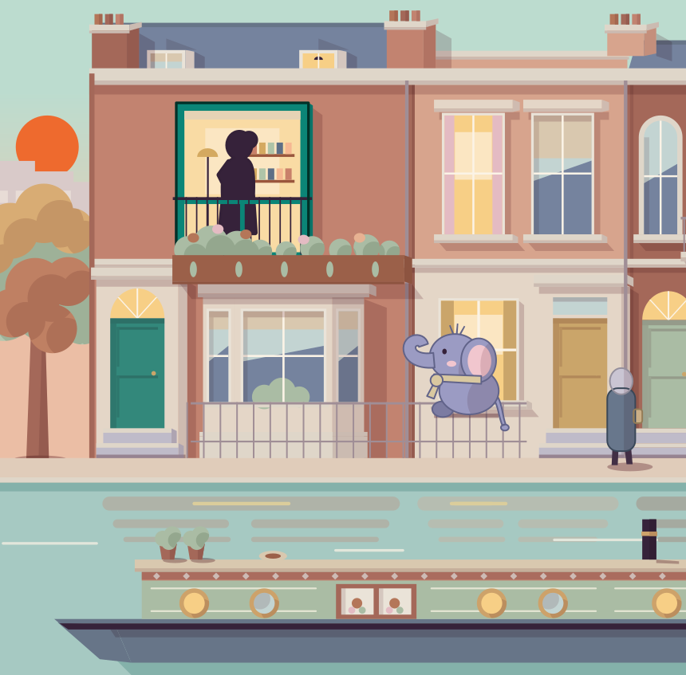
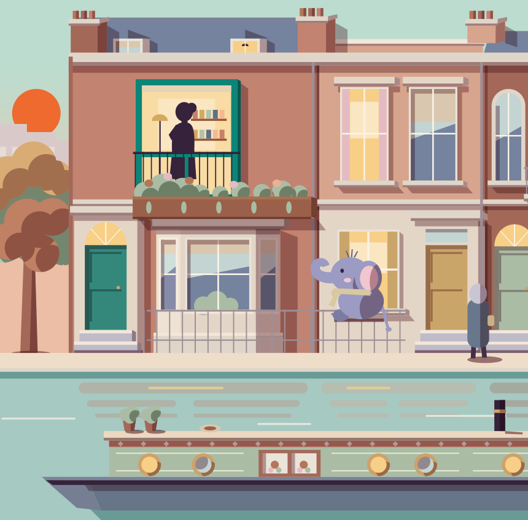
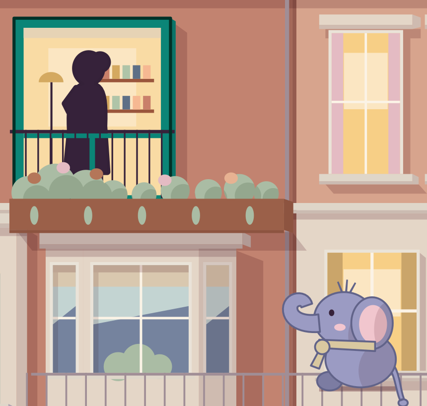
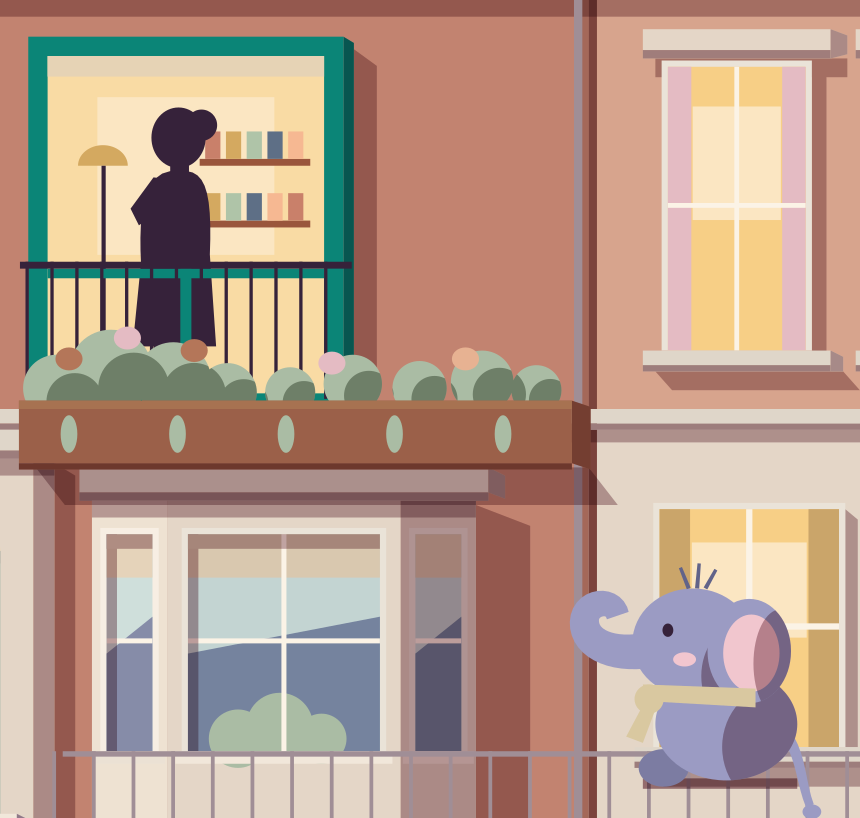
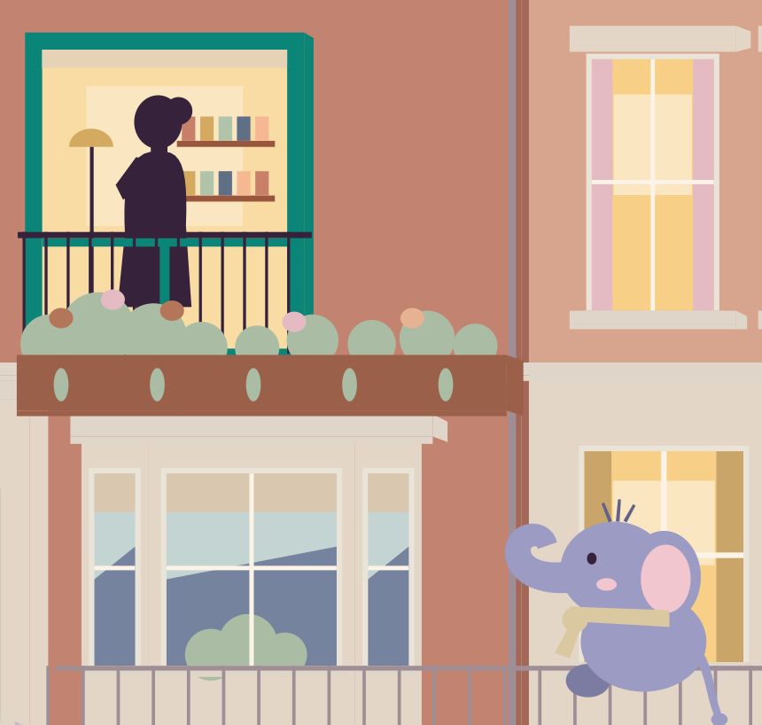
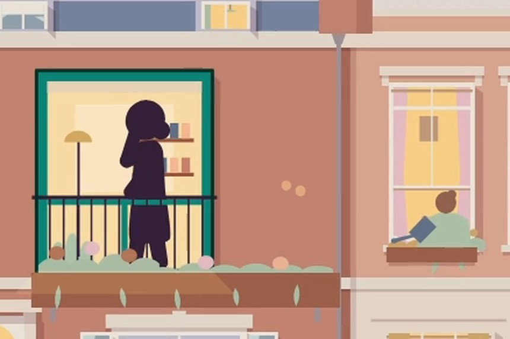
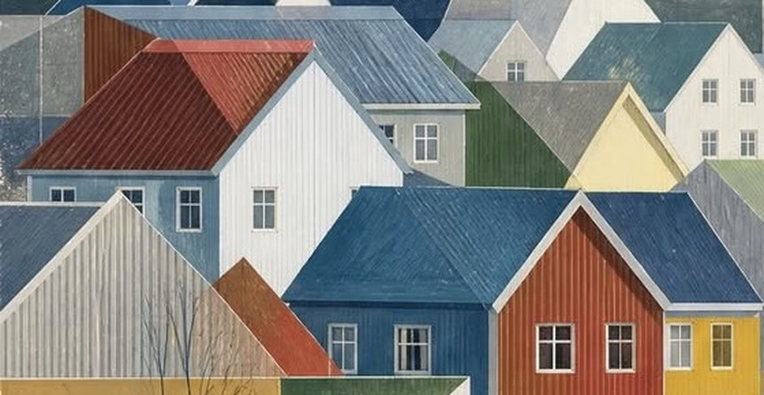

Take the light and shade away as well, and shapes of one colour run together: the bay window goes flat, Pip's head sinks into its body.
Every edge needs a line (A) or a step in light or colour (B). The posters always take the step: that is their crisp look.


A draws a line round the main things.
B draws no outlines: every shape is a lit side next to a shaded side, and only tiny things (window bars, railings) stay thin lines.